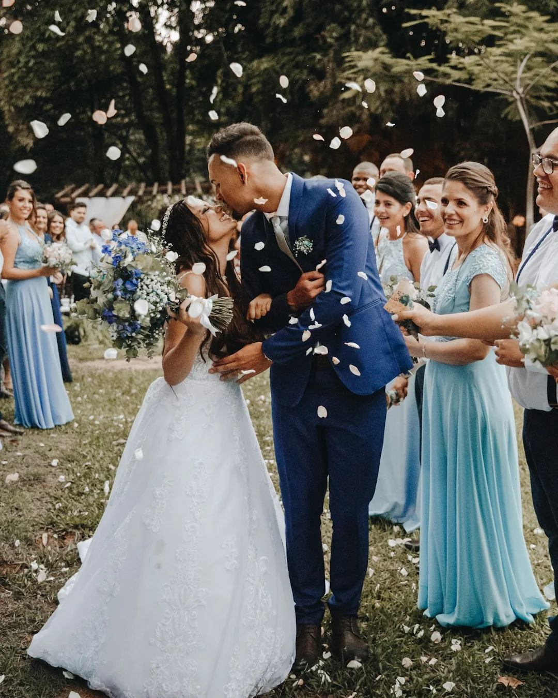
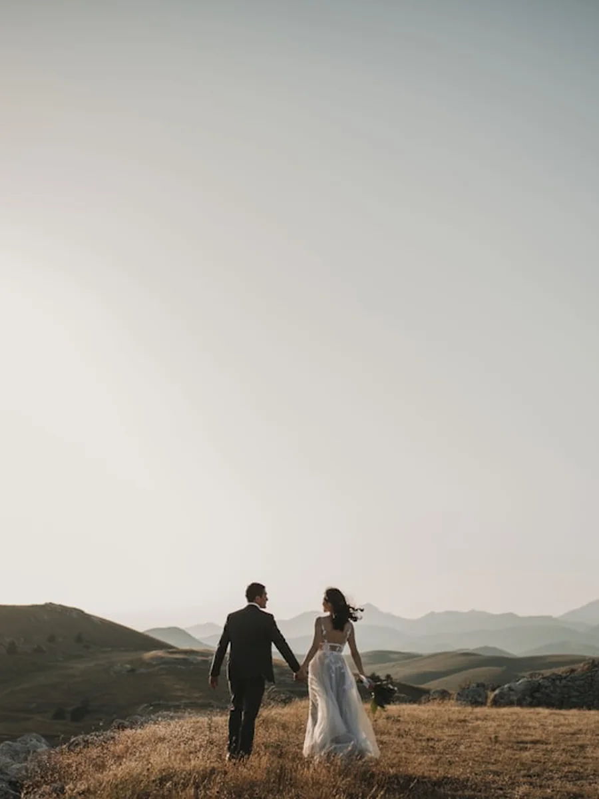
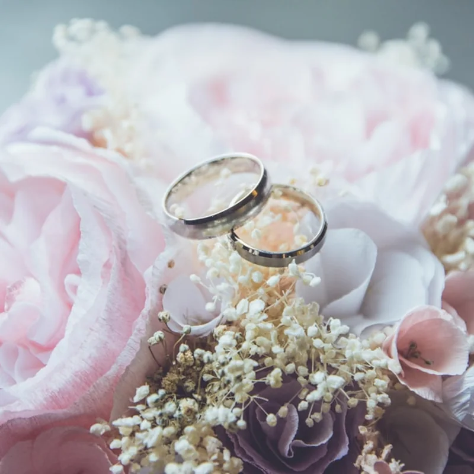

Você não planejou cada detalhe deste dia para passar a festa posando como um robô.
O dia mais especial da sua vida merece ser sentido com o coração, não engessado para a lente. Fotografamos o abraço apertado, o choro do noivo e cada segundo que você vai querer reviver para sempre.



“Meu noivo odeia tirar fotos e nós somos super tímidos…”
Se eu ganhasse um real para cada vez que ouvi essa frase de uma noiva, eu já estaria aposentado!
O nosso estilo é invisível. A gente conversa, dá risada e deixa vocês tão livres que vocês esquecem completamente que existe uma câmera ali. O resultado são imagens cheias de verdade e com a alma de vocês.
O que sobra quando a música para e as flores secam?
As únicas duas coisas físicas que atravessam as décadas com você são a aliança no dedo e as fotografias no seu colo. É assim que cuidamos da sua história:
A Ansiedade Gostosa
O brinde com as madrinhas, o abraço apertado da sua mãe e a respiração funda antes de colocar o vestido.


A Emoção Sagrada
A porta que se abre, as lágrimas do seu pai e o olhar do noivo quando percebe que a espera acabou.


A Intimidade Dourada
Aquele primeiro respiro a sós como marido e mulher, com a luz do sol se pondo e o coração leve.


A Explosão de Alegria
Os copos para o alto, a gravata na cabeça, os pés descalços na pista e a energia pura com quem você ama.


 Gabriel Abdala • Fotógrafo
Gabriel Abdala • Fotógrafo
Mais do que um fotógrafo: o seu parceiro calmo no meio da correria.
Eu sou o Gabriel. Sou apaixonado por histórias que não precisam de maquiagem para serem inesquecíveis.
No dia do seu casamento, meu papel não é apenas apertar um botão técnico: é ser aquela presença serena e discreta que te lembra de respirar quando o coração acelerar, que garante que seu noivo esteja à vontade e que cuida das suas memórias com a mesma reverência com que cuidaria da minha própria família.
Você não precisa saber como posar. Você só precisa viver o dia mais feliz da sua vida — eu cuido do resto.
Nossas Coberturas & Ensaios
Arraste para o lado e conheça as outras histórias que contamos com a mesma sensibilidade.

Casamentos & Mini Weddings
Cobertura fotográfica completa e discreta do making of ao fim da festa, capturando a essência de cada instante.
Consultar Casamento →
Ensaios Pré-Wedding
Uma tarde leve e descontraída em locação externa para vocês se divertirem e criarem fotos incríveis antes do altar.
Consultar Ensaio →
Gestante & Família
Eternize a gestação e a infância com imagens cheias de carinho, luz suave e respeito ao ritmo da mãe e do bebê.
Consultar Gestante →
Estúdio & Retratos
Retratos sofisticados com iluminação de estúdio profissional para perfis pessoais, editoriais e momentos intimistas.
Consultar Estúdio →
Aniversários Marcantes
Cobertura dinâmica e cheia de vida de festas de 15 anos, aniversários adultos e comemorações familiares inesquecíveis.
Consultar Aniversário →
Eventos Sociais
Presença atenta e olhar refinado para registrar celebrações, jantares e acontecimentos de destaque.
Consultar Evento →Como cuidamos de vocês do início ao fim

Viramos amigos antes do dia
Alinhamos o cronograma da luz e fazemos um ensaio leve para vocês perderem qualquer vergonha da câmera.

Segurança e discrição absoluta
Câmeras com gravação dupla simultânea. Zero risco de perda de arquivos e 100% de presença atenta.

Prévia em 48h no seu celular
Para você matar a curiosidade e postar com a família enquanto o acervo completo é tratado com carinho.
Perguntas que toda noiva tem na ponta da língua
Essa é a preocupação número 1 de quase todo casal! Vocês não precisam se preocupar com poses. Eu guio vocês através de conversas, risadas e interações leves. Vocês não vão ficar "olhando para a lente": vão estar simplesmente curtindo um ao outro.
Dias nublados e chuva suave oferecem a luz mais difusa, romântica e cinematográfica que existe na fotografia. Nossos equipamentos são selados contra intempéries e temos técnicas de iluminação artística para criar fotos de tirar o fôlego sob qualquer clima.
Com certeza! Atendemos Goiânia, Anápolis, Brasília, todo o interior de Goiás e viajamos para qualquer lugar do Brasil onde a história de vocês estiver acontecendo.
Como fazemos questão de fotografar apenas um casamento por dia para garantir exclusividade e dedicação total, a data só é travada oficialmente após a assinatura do contrato e a confirmação da entrada.
Vamos sonhar as memórias do seu grande dia juntos?
Antes de qualquer orçamento ou contrato, eu quero ouvir sobre o sonho de vocês. Me envie uma mensagem no WhatsApp com a data do evento para checarmos o calendário.
Paleta Cromática • Quiet Luxury
Amostra 1:1 das cores estruturais desenvolvidas para evocar acolhimento, afeto e elegância editorial.
Warm Ivory / Linho Claro
Acolhimento, pureza orgânica, respiração e conforto visual.
Soft Sand / Greige Suave
Textura tátil de papel nobre, toque editorial de revista.
Deep Charcoal / Grafite Suave
Elegância sóbria e alto contraste sem a dureza do preto puro.
Muted Slate / Cinza Quente
Discrição, suavidade de leitura e refinamento.
Muted Sage / Oliva Suave
Folhagens botânicas, serenidade, natureza e vida.
Warm Terracotta / Mocha
Afeto, calor humano, toque artesanal e atemporal.
Siga a rotina no Instagram • @Abdalafotografia